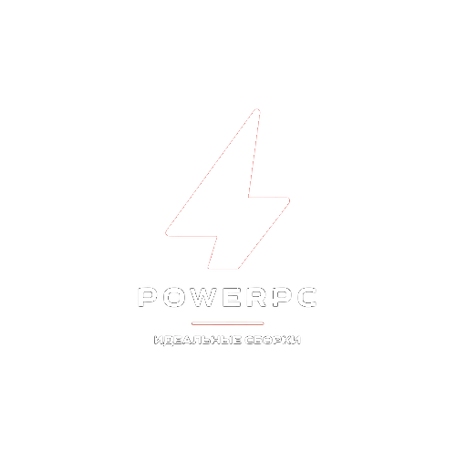

Пользовательское Соглашение
Настоящее Пользовательское Соглашение (Далее Соглашение) регулирует отношения между владельцем power-pc.fun (далее PowerPc или Администрация) с одной стороны и пользователем сайта с другой.
Сайт PowerPc не является средством массовой информации.
Используя сайт, Вы соглашаетесь с условиями данного соглашения.
Если Вы не согласны с условиями данного соглашения, не используйте сайт PowerPc!
Права и обязанности сторон
Пользователь имеет право:
- осуществлять поиск информации на сайте
- получать информацию на сайте
- копировать информацию на другие сайты с указанием источника
- требовать от администрации скрытия любой информации о пользователей
- использовать информацию сайта в личных некоммерческих целях
Администрация имеет право:
- по своему усмотрению и необходимости создавать, изменять, отменять правила
- ограничивать доступ к любой информации на сайте
- создавать, изменять, удалять информацию
Пользователь обязуется:
- обеспечить достоверность предоставляемой информации
- обеспечивать сохранность личных данных от доступа третьих лиц
- не распространять информацию, которая направлена на пропаганду войны, разжигание национальной, расовой или религиозной ненависти и вражды, а также иной информации, за распространение которой предусмотрена уголовная или административная ответственность
- не нарушать работоспособность сайта
- не использовать скрипты (программы) для автоматизированного сбора информации и/или взаимодействия с Сайтом и его Сервисами
Администрация обязуется:
Ответственность сторон: пользователь лично несет полную ответственность за распространяемую им информацию
- администрация не несет никакой ответственности за достоверность информации, скопированной из других источников
- администрация не несёт ответственность за несовпадение ожидаемых Пользователем и реально полученных услуг
- администрация не несет никакой ответственности за услуги, предоставляемые третьими лицами
- в случае возникновения форс-мажорной ситуации (боевые действия, чрезвычайное положение, стихийное бедствие и т. д.) Администрация не гарантирует сохранность информации, размещённой Пользователем, а также бесперебойную работу информационного ресурса
Условия действия Соглашения
Данное Соглашение вступает в силу при любом использовании данного сайта.
Соглашение действует бессрочно.
Администрация оставляет за собой право в одностороннем порядке изменять данное соглашение по своему усмотрению.
При изменении соглашения, в некоторых случаях, администрация может оповестить пользователей удобным для нее способом.